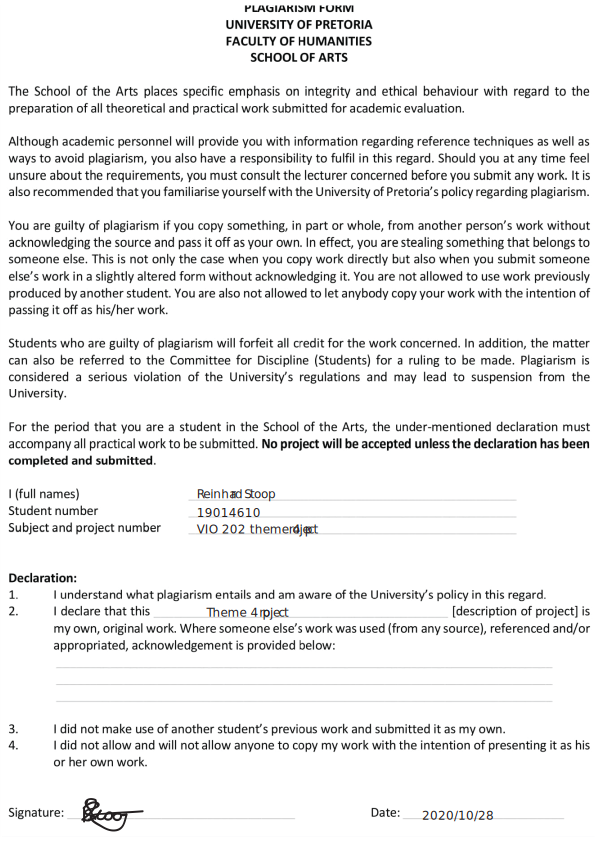

Rationale
Theme 4 was a very difficult theme for me. But not difficult in the way that you would imagine. It was difficult because it was the end of a journey that got off to a rocky start, but ended as one of the best journeys that i've ever been through. VIO has made me a better person all around. I pay more attention to detail to life around me (more than I ever would've wanted) and it taught me to be more observant and patient. Theme 4 showed me personally of what I accomplished this year, where I started and where I ended. I am very happy with what VIO has taught me and I can't wait to see what the next journey in my life is going to be.